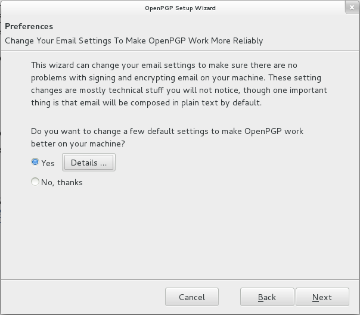
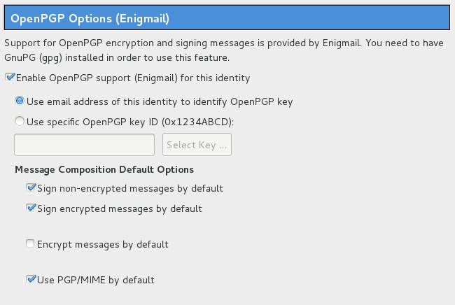
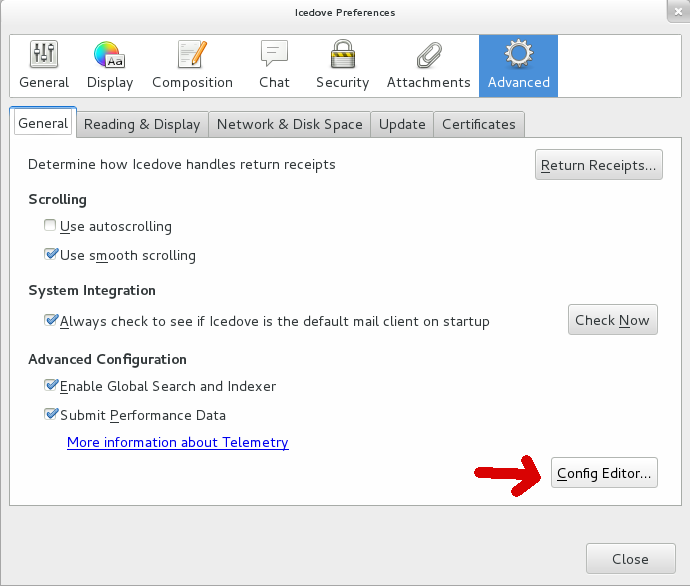

HTML email, attachments, and flowed text in Enigmail
I’ve noticed that a lot of people who are new to GPG really don’t want to give up their HTML email, but the Enigmail setup wizard recommends that you do this.

People have also had weird problems with email attachments when sending signed or encrypted emails. And when you use Enigmail’s default settings and compose your messages in plaintext, Enigmail also turns off “flowed text”, so that lines get wrapped at 72 characters.
Well, none of this is actually a problem if you use PGP/MIME, which is the recommended way of using OpenPGP anyway. You can safely compose messages in HTML, there are no problems with attachments, and if you use plaintext email it’s completely fine to use flowed text. Here’s how to configure Thunderbird to work with PGP/MIME.
Go to Account Settings. In Windows and Linux this is in the Edit menu, in Mac OS X this is in the Tools menu. Go to the OpenPGP Security page (if you have multiple Thunderbird accounts you’ll need to do this for each one).

Make sure that “Use PGP/MIME by default” is checked. While you’re at it, you might want to sign both non-encrypted and encrypted messages by default.
Once you have enabled PGP/MIME, it’s completely safe to use HTML email, attachments don’t have any problems, and it’s also safe to use flowed text for plaintext emails.
If you’d like to turn on HTML email, go to the Composition & Addressing page and make sure “Compose messages in HTML format” is checked. Note: There are valid arguments against HTML email, but it’s not a security problem, and some people hate plaintext email. So it’s fine.
If you do want to use plaintext email, you can enable flowed text by going to Preferences. In Windows and Linux it’s in the Edit menu, in Mac OS X it’s in the Thunderbird menu. From there go to Advanced, then the General tab, and click Config Editor in the bottom right.

When you open it it says “This might void your warranty!”, but you can go ahead and click “I’ll be careful, I promise”. This is the exact same thing as going to about:config in Firefox. Then you can search for “send_plaintext_flowed” and double-click the setting to change the value from false to true. And by the way, you can change all of Thunderbird’s preferences from in here too, including ones that don’t have a GUI for changing, and some of them might break everything, so be careful.